About
far from the organic
identity of humanity
identity of humanity

Identity, as a notion, regulates human beings according to stabilizing concepts of sex, gender, and sexuality. However, the existing perception of this set of concepts is challenged by those who deviate from the standards of conformity, or whose gender is incoherent or discontinuous.
The Teaser
Synopsis
A new evolutionary dimension, its development, and its micro-behaviours reconfigure patterns that determine its adaptation and survival. Each action and reconfiguration associated with this being, even if involuntary, modifies the environment in which it is framed. Far from the unity of the first cell, far from the organic identity of humanity, the subversion of morphogenesis proposes the creation of new bodies and abstract sexes. Moving away from the perpetuation of the sex and gender binarism, this possibility unfolds a continuous variation of body and sex, nature and matter, evolution and mankind.
Now she turns her head to the right but that means nothing
Communication design vi / 2022